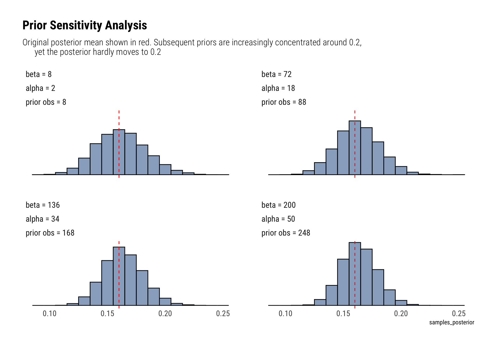

data("algae")
glue::glue("n = {length(algae)}")n = 274glue::glue("y = {sum(algae == 1)}")y = 44June 22, 2020
Bayesian Data Analysis (Gelman, Vehtari et. alter) is equals part a great introduction and THE reference for advanced Bayesian Statistics. Luckily, it’s freely available online. To make things even better for the online learner, Aki Vehtari (one of the authors) has a set of online lectures and homeworks that go through the basics of Bayesian Data Analysis.
In this series of blogposts, I’ll go over the homeworks that Aki has kindly made available online. Hopefully, I’ll go over the whole book and learn a thing or two. If you are interested in also learning bayesian statistics, I wholeheartedly recommend Statistical Rethinking first: the best and most interesting statistics course ever created.
Algae status is monitored in 274 sites at Finnish lakes and rivers. The observations for the 2008 algae status at each site are presented in file algae. The data can also be accessed from the aaltobda ( R ) package as follows:
So that you can test the correctness of your code implementations, we provide some results for the following test data. It is also possible to check the functions you need to implement with markmyassignment. ( > ) algae_test ( <-c(0,1,1,0,0,0) ) Note! This data is only for the tests, you need to change to the full data algae when reporting your results.
Let ( ) be the probability of a monitoring site having detectable blue-green algae levels and ( y ) the observations in algae. Use a binomial likelihood for the observations ( y ) and a Beta (2,10) prior for ( ) to formulate a Bayesian model. Here it is not necessary to derive the posterior distribution for ( ) as it has already been done in the book. Also, it is not necessary to write out the distributions; it is sufficient to use label-parameter format, e.g. Beta ( (, ) ) Your task is to formulate a Bayesian model and answer questions based on it:
formulate (1) model likelihood ( p(y | ),(2) ) the prior ( p(), ) and (3) the resulting posterior ( p(| y) . ) Report the posterior in the format Beta ( (, ), ) where you replace ’s with the correct numerical values.
\[ y \sim Binomial(n, \pi) \\ \pi \sim Beta(2, 10) \]
Given that the Beta distribution is the conjugate of the binomial, the posterior is also a binomial. In particular:
\[ \pi | y \sim Beta(2 + y, 10 + n - y) \] We must then, find both \(n\) (number of trials) and \(y\) (number of successes):
Therefore:
\[ \pi | y \sim Beta(46, 240) \] ### Question B
What can you say about the value of the unknown ( ) according to the observations and your prior knowledge? Summarize your results with a point estimate (i.e. ( E(| y) ) ) and a ( 90 % ) posterior interval. Note! Posterior intervals are also called credible intervals and are different from confidence intervals.
The posterior mean:
\[ E(\theta | y) = 46 / 286 = 0.16 \] For a posterior interval:
What is the probability that the proportion of monitoring sites with detectable algae levels ( ) is smaller than ( _{0}=0.2 ) that is known from historical records?
Given our posterior:
What assumptions are required in order to use this kind of a model with this type of data?
We are assuming that the presence of detectable algae levels are conditionally independent give \(\pi\), with the probability of presence equal to \(\pi\) for all cases.
Make prior sensitivity analysis by testing a couple of different reasonable priors and plot the different posteriors. Summarize the results by one or two sentences.
n <- 274
y = 44
get_posterior <- function(prior_alpha, prior_beta) {
alpha <- prior_alpha + y
beta <- prior_beta + n - y
rbeta(10000, alpha, beta)
}
set.seed(25)
labels_alpha <- unlist(map(seq(2, 50, length.out = 4), ~ glue::glue("alpha = {.}")))
labels_beta <- unlist(map(seq(8, 200, length.out = 4), ~ glue::glue("beta = {.}")))
labels_prior_observations <- unlist(map(seq(2, 50, length.out = 4) + seq(8, 200, length.out = 4) - 2,
~ glue::glue("prior obs = {.}")))
tibble(alpha = seq(2, 50, length.out = 4),
beta = seq(8, 250, length.out = 4)) %>%
mutate(samples_posterior = map2(alpha, beta, ~ get_posterior(.x, .y))) %>%
unnest(samples_posterior) %>%
mutate(prior_observations = alpha + beta - 2,
prior_observations = factor(prior_observations, labels = labels_prior_observations),
alpha = factor(alpha, labels = labels_alpha),
beta = factor(beta, labels = labels_beta)) %>%
ggplot(aes(samples_posterior)) +
geom_histogram(binwidth = 0.01, color = "black", fill = "dodgerblue4", alpha = 0.5) +
geom_vline(aes(xintercept = 0.16), linetype = 2, color = "red") +
facet_wrap(beta~alpha + prior_observations) +
theme(axis.title.y = element_blank(),
axis.text.y=element_blank(),
axis.ticks.y=element_blank()) +
labs(title = "Prior Sensitivity Analysis",
subtitle = "Original posterior mean shown in red. Subsequent priors are increasingly concentrated around 0.2,
yet the posterior hardly moves to 0.2")
The posterior is very robust. Even after drastically increasing the number of prior observations, the prior’s mean (0.2) is still a very unlikely event in the eyes of the posterior.